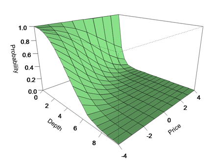

Deciding where to place limit orders on the passive side of the order book is a fundamental question in algorithmic execution. The reasoning is that orders placed deeper into the book offer price improvement (if taken by an impatient trader) and/or time priority improvement (through being near the front of the queue at that price level should the prices move in that direction). This is the barrier diffusion problem: with the best price diffusing through various price levels through Brownian motion, what is the likelihood of it hitting the barrier of a particular limit order?
Naturally this probability will vary with expected price direction: when buying, there is little benefit in placing orders away from the best bid if the price is rising strongly; but the opposite is true when the price is falling, as illustrated below.

Hasbrouck gives a solution to the barrier diffusion model in Empirical Market Microstructure [1]. As often happens in q, the initial expression for the probability of filling is trivial:
/ x depth offset from best price
/ y price trend over period
/ z price volatility over period
pfill: {(1 - gausscdf (y + x) % z) + (exp neg (2 * x * y) % z * z) * gausscdf (y - x) % z}
kdb+ does not have an extensive range of maths and statistics functions, so the Gaussian cumulative distribution function will need to be written. The following is a simple sum of series approach but it does lend itself to q's vector arithmetic.
gausscdf: {$[x < 0; 1 - gausscdf abs x; 0.5 * 1 + erf x % SQRT2]}
erf:{
negate: x < 0; if [negate; x: neg x]; result: 0f;
if [x > 0; result: 1f & (2 * x % SQRTPI) * 1 + sum prds (neg x * x) * ERF;];
$[negate; neg result; result]
}
/ Some constants
SQRT2: sqrt 2; PI: acos -1; SQRTPI: sqrt PI
/ The terms for the Gaussian error function, precise to seven decimal places.
ERF: {(0.5 + x) % (1 + x) * 1.5 + x} til 42
Although simple, it still performs well: on a laptop pfill can run 80,000 times per second.
Postscript. A collection of quantitative functions can be downloaded. These include the error function and the Gaussian distribution.
Imagining an order book with a price volatility of 2 over the trading period and tick size of 0.5. Create a range of ticks and price changes then run the model over that range, inserting the probabilities into a table:
ticks: (til 20) * 0.5
prices: (til 9) - 4
data: ([] depth: (); price: (); p: ())
{{`data insert (y; x; pfill [y; x; 2])}[x] each ticks} each prices
Then plot the results table in a package such as R to give the chart shown above.
| 1. | Joel Hasbrouck, Empirical Market Microstructure, 2007 | |
| 2. | www.kx.com |